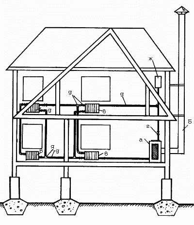
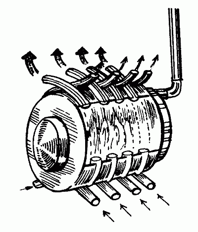
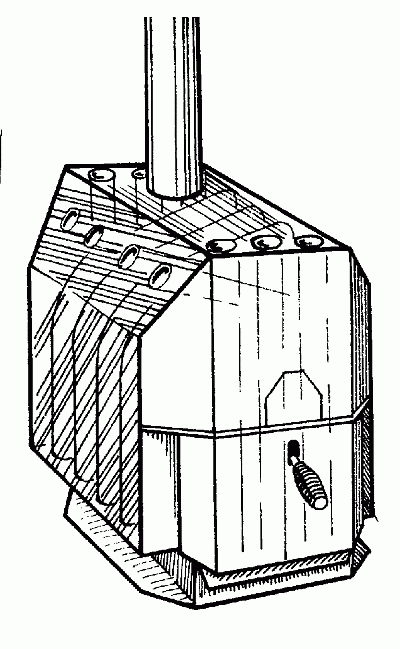

Котлы.

Самым главным элементом в любой отопительной системе является котел.
В нем топливо преобразуется в тепло, которое передается воде или антифризу. Прежде чем выбрать оборудование, определитесь с видом топлива. Лучше всего, если к дому подведен магистральный газ – это самый дешевый и при правильном использовании безопасный источник тепла. К тому же газ – экологически чистый энергоноситель. Его расход контролируют с помощью счетчика.
Котлы бывают напольные и настенные. Последние лучше подходят для небольших домов. В этом случае под котельную не нужно отводить отдельную комнату.
Если газ к участку не подведен, часто используется оборудование, работающее на электроэнергии.
Достоинства такого способа обогрева:
– экологичность (не нужны котельная и дымоход);
– регулируемая температура воздуха.
Однако электрическое тепло – самое дорогое. Чтобы установить такую систему отопления, необходимо получить разрешение на подведение кабеля большой мощности.
Следующий вид топлива – солярка. При применении этого топлива вы не будете зависеть от газовых и электрических сетей. Однако оборудование (топливные баки, система подводки и очистки жидкого топлива) стоит достаточно дорого. Немного снизить затраты можно, купив автоматические устройства, экономящие энергию. Дополнительные приборы типа климат-контроля окупятся уже через год.
Устанавливать котел, работающий на угле или дровах, не рекомендуется. Топливо в него придется подбрасывать несколько раз в день. При сгорании оно оставляет побочный продукт – золу.
Выбирая котел, рассчитайте площадь отапливаемого помещения. Мощность устройства при высоте потолков до 3 м определяется соотношением 1 кВт на 10 м2. На мощности котла можно сэкономить, качественно утеплив комнату. Если вы хотите обеспечить себя горячей водой, увеличьте мощность еще на 20%. Подобный котел называется двухконтурным. Вода подогревается не постоянно, а периодически: при ее потреблении отопление не работает.
Котел проточного типа подойдет тем, кто привык экономить воду. Более расточительным рекомендуем приобрести агрегат со встроенным резервуаром – бойлером. Для купания требуется бойлер объемом не меньше 100 л.
Принцип работы котла в следующем.
Из котла горячая вода по трубам поступает в радиаторы. По одной трубе она поднимается и идет на отопление комнат, по второй – уже холодная – спускается обратно в котел. Существуют две системы подачи теплоносителя в радиаторы.
При естественной циркуляции горячая вода или антифриз движутся вверх под действием гравитационной силы, возникающей за счет различной плотности (удельного веса) теплоносителя в подающей и обратной трубах. Чтобы снизить сопротивление, применяют трубы большого диаметра. Температура воды или антифриза практически не поддается регулированию. И большие затраты топлива совсем не гарантируют качественного отопления.
Если циркуляция принудительная, теплоноситель поднимается благодаря насосу. Система замкнутая – на место горячей воды приходит холодная. Чем труба толще, тем меньше сопротивление, что позволяет сэкономить на мощности насоса. Однако такие трубы неудобны и дороги. Поэтому принято соблюдать баланс между диаметром труб и мощностью насоса, появляется возможность дополнительно регулировать температуру воды.
Теплоносителем в системе отопления является вода. Но если зимой дом подолгу пустует, то в трубы лучше залить антифриз. Не используйте для этих целей автомобильный тосол: он вреден для здоровья. У антифриза есть много недостатков. Его теплоемкость на 20% ниже теплоемкости воды, в связи с этим нужны мощные радиаторы и дорогой насос.
Радиаторы могут быть соединены одной трубой. Теплоноситель последовательно переходит от одного отопительного прибора к другому, при этом остывая. Последний из этих приборов значительно холоднее первого. Специалисты называют такую разводку однотрубной. Ее единственное преимущество – низкая стоимость. Чтобы тепло равномерно распределялось по всему зданию, к каждому радиатору нужно подвести две трубы. По одной в отопительную систему поступает горячая жидкость, по другой выходит холодная.
Принципиально все котлы делятся на одноконтурные и двухконтурные. Одноконтурные котлы рассчитаны только на отопление дома (а нагрев воды для других целей происходит с помощью бойлера). Двухконтурные котлы предназначены как для отопления, так и нагрева воды с помощью внутреннего теплообменника. Котлы с большим количеством контуров целесообразно использовать в тех случаях, когда, наряду с отоплением дома и ГВС, устраивается, например, напольное отопление или отопление помещений с различными температурными режимами (бассейнов, зимних садов, теплиц, гаражей).
Котлы разных конструкций могут работать на каком-то одном виде топлива, а могут быть комбинированными, использующими их различные сочетания.
Котлы, предназначенные для сжигания как газа, так и жидкого топлива, дают возможность владельцам в течение отопительного сезона беспрепятственно переходить с одного вида топлива на другой. Это можно осуществить, меняя горелки или используя комбинированную горелку, к которой подводятся газопровод и топливопровод. От потребителя требуется лишь переключать горелку с одного вида топлива на другой в случае необходимости. Естественно, что устройство такой горелки сложнее, а значит, стоимость оказывается выше, чем при применении двух горелок для разных видов топлива.
По принципу работы горелки бывают надувными и атмосферными. Надувные горелки используются как с жидкотопливными, так и с газовыми котлами, а атмосферные горелки работают только на газе.
В надувной горелке топливо подается под давлением на форсунку, где распыляется и смешивается с воздухом, нагнетаемым с помощью вентилятора. В атмосферной горелке все происходит гораздо проще. При необходимости подачи тепла в атмосферной горелке зажигается запальный факел, открывается газовый клапан, и горелка запускается. Быстрое и мягкое зажигание однородной газо-воздушной смеси позволяет све-сти к минимуму начальный выброс вредных веществ и обеспечивает малошумный запуск горелки. Если при эксплуатации отопительного оборудования, оснащенного горелками с наддувом, необходимо использовать шумопоглощающие кожухи как для самих горелок, так и для котлов, то работа атмосферных газовых котлов абсолютна бесшумна.
В электрических котлах использованы смонтированные в корпусе электрические ТЭНы из нержавеющей стали разной мощности. Все эти котлы являются одноконтурными, поэтому предназначены только для обогрева дома. По принципу работы электрический котел сравнивают с проточным нагревателем, только более высокой мощности. Имея в комплекте циркуляционный насос, электрический котел нагревает воду так же, как и проточный водонагреватель, используя проточную холодную воду.
А нагревают ее в ступенчатой последовательности от минимальной до максимальной мощности установленные внутри нагревательные элементы – ТЭНы. Работая по протоку, они могут нагреть неограниченное количество воды. По мощности ТЭНов различаются типы электрических котлов – 15, 24, 42, 48 кВт. Есть модели электрических котлов, мощность которых достигает 90 кВт.
Вся автоматика у котлов погодозависимая. Она чутко реагирует на изменения температуры на улице, в результате чего котел повышает или понижает температуру обогрева дома. Имеются также виды автоматиче-ских регуляторов, оснащенных таймерами и обеспечивающих установку обогрева дома в дежурном режиме непосредственно к вашему приходу домой. Это позволяет также установить таймер для подогрева горячей воды в строго назначенное время.
Кроме этого, автоматические регуляторы позволяют организовать в доме так называемое позонное отопление: в этом случае редко используемые помещения отапливаются с меньшей интенсивностью (гараж, прачечная комната, подсобные помещения), в то время как жилые комнаты будут получать тепло в обычном режиме.
Система автономного отопления на твердом топливеАвтономная система отопления предназначена для обогрева дома в любое время года и в любых климатических условиях. Необходимым условием для работы данной системы отопления является наличие топлива. Из всех существующих система отопления на твердом топливе является самой дешевой в эксплуатации и монтаже и самой универсальной (рис. 11).
Котел (рис. 11, а) может быть установлен в любом помещении дома и не займет много места (необходимая площадь для установки котла – 1,5 м2). Топливом служат дрова или уголь. Стоимость котла зависит от площади отапливаемых помещений дома и от модели котла.
Дымоход (рис. 11, б) может быть установлен внутри или снаружи дома или же объединен с уже существующим дымоходом. Стоимость дымохода зависит от его конструкции и высоты (неутепленный, из эмалированных труб, утепленный, из нержавеющей стали).
Радиаторные батареи (рис. 11, в) устанавливаются из расчета площади помещения. Стоимость батарей зависит от их конструкции, самые дешевые – чугунные, самые дорогие – алюминиевые.

Рис. 11. Схема системы автономного отопления на твердом топливе: а – котел КЧМ-5; б – дымоход эмалированный неутепленный; в – чугунные семисекционные радиаторные батареи; г – циркулярный насос «grundfos»; д – соединительные трубы и фитинги стальные неоцинкованные; ж – сварной металлический расширительный бачок
Циркуляционный насос (рис. 11, г) служит для равномерного обеспечения циркуляции жидкости в системе.
Соединительные трубы (рис. 11, д) самые распространенные и дешевые – металлические (они требуют покраски и подвержены коррозии, а стоимость монтажа дороже, чем труб из пластика). Дороже стоят трубы из металлопластика или полипропилена, но они не требуют обслуживания, более долговечны и надежны в соединениях.
Расширительный бачок (рис. 11, ж) устанавливается в самой верхней точке отопительной системы и служит для регулировки давления в системе.
Если дом зимой отапливается не постоянно, необходимо заливать в систему специальную незамерзающую жидкость.
Виды котлов«Bullerjan» – мощный нагреватель воздуха для быстрого отопления любых помещений, выпускаемый по канадской лицензии фирмой «ПрокК-Энерготекс»
Котел этого вида отличается следующими достоинствами:
– не зависит от электричества, нефти и газа;
– равномерно обогревает весь дом;
– работает на всех видах топлива, картонажных изделиях и отходах от их производства;
– изготовлен из массивной стали;
– экономичен и прост в обслуживании;
– у него контролируемый режим горения;
– КПД – 80%;
– используется на дачах и в жилых домах, теплицах, мастерских и на предприятиях.
«Bullerjan» – эффективно нагревает воздух, иначе, чем другие приборы, отдающие теплоту только с внешней поверхности.
Уже через несколько минут после зажигания нагретый поток воздуха вытекает из труб и равномерно распределяется по помещению (рис. 12).

Рис. 12. Нагреватель воздуха «Bullerjan»
Так как трубы полностью прикасаются к топке печи, они сразу принимают выработанное тепло и сразу же передают его в обогреваемое помещение.
Топливом для «Bullerjan» могут быть древесные отходы, дерево, торфобрикеты и картонажные изделия. Благодаря конструкции печи расход топлива низкий, сгорание оптимальное, КПД чрезвычайно высокий.
Одной загрузки печи соответствующим количеством топлива хватает на целый день эксплуатации, еще одной загрузки хватит на ночь. Большая дверь печи и емкость камеры горения облегчают работу и позволяют загружать даже большие поленья. Изредка, в зависимости от используемого топлива, от вас потребуется выгребать золу.
Для «Bullerjan» не нужен вентилятор, чтобы равномерно распределить тепло. Скорости течения теплого воздуха достаточно для отопления больших помещений.
Мощность зависит от климатических условий и вида топлива.
Котел воздухогрейный «Профессор Бутаков» предназначен для воздушного отопления жилых и производственных помещений, гаражей, подвалов, теплиц, хлевов, кунгов, сушильных камер, а также для разогрева и приготовления пищи.
Выпускается 5 моделей для отопления помещений с большим объемом от 150 до 1200 м3и номинальной мощностью от 9 до 55 кВт соответственно.
Все выпускаемые модели объединены общим назначением, принципом действия, компоновкой и применяемым топливом.
Модели отличаются габаритными размерами, массой, объемом камеры сгорания, максимальным объемом единовременно загружаемого топлива, диагональю проема топочной дверцы, диаметром и количеством конвективных труб, суммарным сечением прохода нагреваемого воздуха, суммарной площадью поверхностей нагрева, диаметром и высотой дымохода.
Основные характеристикиБольшая суммарная площадь поверхностей нагрева, одной стороной контактирующих непосредственно с газопламенной средой, а другой – с воздухом отапливаемого помещения.
Конвективные трубы по всему поперечному сечению и по всей длине находятся непосредственно в газопламенной среде.
Топливник имеет форму относительно длинного, высокого и неширокого параллелепипеда, усеченного в верхней части.
Такая форма, приближающаяся к плоскости, теоретически имеет максимальное отношение площади поверхности к охватываемому ей объему. Она также наиболее полно соответствует форме тепловой эпюры свободно сжигаемого твердого топлива.
Передняя и задняя поверхности полноценно участвуют в конвективном теплообмене. На них размещены конвективные трубы.
Топочная дверца с кожухом-конвектором также является эффективным радиатором.
Течение газопламенного потока, благодаря форме топливника и газонаправляющим щиткам, проходит вдоль контура всех конвективных труб, от самого их начала до самого их конца с максимальным использованием так называемых хвостовых поверхностей теплообмена.
На верхней горизонтальной поверхности, непосредственно контактирующей с газопламенной средой, можно разогреть или приготовить пищу.
Большой сменный колосник с жестко контролируемой нижней подачей питающего воздуха обеспечивает равномерное горение по всей площади топливника. При необходимости он позволяет резко интенсифицировать процесс горения для быстрого подъема температуры в отапливаемом помещении, просушивания сырого топлива или для выжигания скопившейся сажи. Образующаяся зола по мере накопления, сама ссыпается через щели колосника в зольник. При длительном использовании очень качественного топлива может быть поврежден только легко заменяемый колосник.
Под топочной дверцей расположен емкий выдвижной зольный ящик, с помощью которого можно одним движением, не прерывая процесса горения, удалить накопившуюся золу. Это позволяет использовать топливо с высокой зольностью.
Входные отверстия конвективных труб горизонтальны и находятся на высоте 120 мм от уровня пола, что благоприятно для свободной циркуляции нагреваемого воздуха.
Котел имеет достаточно высокое и широкое устойчивое основание с отверстиями для дополнительного крепления его к полу. Для установки котла не требуется никаких дополнительных оснований или подиумов.
Котел «Профессор Бутаков» (рис. 13) был изготовлен сравнительно недавно и пока представлен только одной моделью «Студент-150». Продажи на начало 2004 года измеряются единицами, но несомненный интерес покупателей уже заметен. В ближайшие 1–2 года завоюет серьезную долю на рынке отопительных печей. Гарантия – 2 года.

Рис. 13. Нагреватель воздуха «Профессор Бутаков»
«Чудо-печь» – оригинальный малогабаритный котел, производимый в России по немецкой технологии. Его конструкция и система подачи топлива выполнены таким образом, что после выхода его на рабочий режим он не выделяет копоти и запаха, следовательно, для него не нужны дымоход и вытяжка. Вся копоть оседает на стенках рабочей головки и легко удаляется по мере накопления.
Печь работает на дизельном топливе всех марок и керосине. Расход топлива составляет всего лишь 120 г за 1 час. Емкость заправленного бака – 1,9 л. Тепловая мощность составляет 1,8 кВт/ч. Дозаправка через 15 часов.
Используется для отопления дач, гаражей, теплиц, обогрева бытовых, хозяйственных помещений и т. п.
Незаменима для строителей, дачников и садоводов. Так же на ней можно готовить и пищу.
Печь абсолютно пожаробезопасна. При работе ее корпус остается холодным, поэтому не нужно специальной теплоизоляции ни дна, ни стенок печи.
Нет опасности того, что человек может угореть, так как угарный газ СО, возникающий в процессе горения, успевает окислиться на раскаленных цилиндрах в углекислый газ СО2, который в небольших объемах безвреден.
Оригинальная конструкция печи обеспечивает равномерное распределение тепла в помещении. Поток раскаленного воздуха, исходящий от горелки, обеспечивает комфортную температуру в помещении объемом 50 м3.
Полезные советыКупив котел, необходимо установить его в специально отведенном месте и подключить. Как правило, все эти услуги оказывают фирмы, продавшие вам оборудование.
Как показывает опыт, это значительно сокращает время, а самое главное, сохраняет нервы, ограждая от ненужных хлопот и пререканий с рабочими.
В случае если вы решили воспользоваться услугами специалиста по монтажу оборудования, вам гарантируется долговечность купленного вами товара. Специалисты таких фирм имеют высокую квалификацию, присвоенную им после обучения непосредственно на заводах-изготовителях.
Если вы все-таки решите установить котел с по-мощью нанятой со стороны монтажной бригады, требуйте от них предъявления специальной лицензии, разрешающей производить соответствующие работы, и по всем вопросам, возникающим в процессе установки котла, отправляйте бригадира на консультацию к специалистам фирмы, предоставившим вам оборудование.